Laborator 11. Transmiterea de Notificări folosind Serviciul Google Cloud Messaging
Google Cloud Messaging for Android (GCM) este un serviciu gratuit prin intermediul căruia programatorii pot transmite informații între un server de aplicații și un dispozitiv mobil (pe care rulează sistemul de operare Android), implementând toate aspectele legate de gestiunea mesajelor, asigurând livrarea acestora. Nu există nici un fel de limite în privința resurselor implicate pentru transmiterea acestor informații.
Necesitatea unui astfel de serviciu este impusă de optimizările specifice aplicațiilor pentru dispozitive mobile:
- pentru serverul de aplicații: detecția disponibilității dispozitivului mobil și a momentului în care se poate realiza transmisia de date (în funcție de tipul de conexiune), gestiunea mesajelor (implementarea unor cozi de așteptare), implementarea mesajelor cu mai mulți destinatari (reutilizarea unei conexiuni), transmiterea mai multor mesaje către un singur dispozitiv mobil, aspecte legate de compresie și detecția erorilor;
- pentru dispozitivul mobil: limitări în privința consumului de energie și al transferului de date (în cazul unor anumite tipuri de conexiuni costurile sau viteza implicate fiind semnificative).
Serviciile precum Google Cloud Messaging for Android implementează cele mai bune practici în domeniu pentru tratarea acestor aspecte, astfel încât programatorul se poate concentra exclusiv asupra funcționalității aplicației.
Comunicația dintre cele două entități se poate realiza în ambele sensuri:
- server de aplicații → dispozitiv mobil prin intermediul Google Cloud Messaging, nefiind necesar ca aplicația Android să ruleze la momentul în care este transmis mesajul, ea fiind pornită prin intermediul unei intenții (cu condiția ca aplicația să poată primi mesajele cu difuzare și să aibă permisiunile necesare specificate);
- dispozitiv mobil → server de aplicații prin intermediul Cloud Connection Server.
Google Cloud Messaging for Android nu pune la dispoziție un API pentru procesarea mesajelor, acestea fiind trimise exact în forma în care au fost primite.
Un mesaj transmis prin intermediul Google Cloud Messaging poate:
- indica aplicației Android faptul că trebuie să se sincronizeze cu serverul de aplicații (util mai ales pentru aplicațiile de poștă electronică);
- conține informații utile (de până la 4kb), care sunt interpretate de aplicația Android (folosite în special pentru aplicațiile de mesagerie instantanee).
Pentru dispozitivele mobile cu o versiune a sistemului de operare Android mai mică decât 3.0 este necesară crearea unui cont de utilizator Google. Această cerință nu este obligatorie pentru versiuni mai mari decât 4.0.4.
Arhitectura Google Cloud Messaging for Android
Un sistem informatic folosind infrastructura de comunicații Google Cloud Messaging for Android implică dezvoltarea următoarelor componente:
- un server de aplicații responsabil cu transmiterea de informații către dispozitivul mobil prin intermediul serviciului Google Cloud Messaging for Android; de asemenea, serverul va putea procesa anumite mesaje transmise de către client (de exemplu, identificatorul prin care dispozitivul mobil este înregistrat în mod unic în cadrul serverului Google Cloud Messaging);
- o aplicație Android rulând pe un dispozitiv mobil cu un sistem de operare Android având o versiune mai mare de 2.2, pe care este instalat Google Play Services.

De regulă, procesul de proiectare și dezvoltare a sistemului informatic implică următorul flux de lucru:
1. se obține un număr de proiect prin intermediul Google Developers Console, prin care un dezvoltator este identificat în mod unic; de asemenea, se activează serviciul Google Cloud Messaging;
2. se implementează aplicația Android care va rula pe client:
- se realizează înregistrarea dispozitivului mobil (printr-un apel al metodei
registera claseiGoogleCloudMessaging, care primește ca parametru numărul de proiect) în cadrul serverului Google Cloud Messaging (etapa 1), generându-se un identificator care va fi utilizat pentru a desemna mesajele care trebuie transmise către acesta (etapa 2); valoarea sa este generată astfel încât să identifice în mod unic:- numărul de proiect al dezvoltatorului de la al cărui server de aplicații vor fi transmise mesajele;
- dispozitivul mobil către care se transmite mesajul (prin intermediul contului Google asociat acestuia);
- aplicația care va procesa mesajul respectiv (pe baza informațiilor din
AndroidManifest.xml- denumirea pachetului care identifică în mod unic o aplicație de pe un dispozitiv mobil și versiunea).
- se transmite identificatorul de înregistrare către serverul de aplicații (etapa 3) astfel încât acesta să îl poată utiliza pentru a indica Google Cloud Messaging locația către care va livra mesajele;
- se tratează mecanismul de primire a unui mesaj (etapa 6); acesta va fi livrat aplicației corespunzătoare prin intermediul unei intenții de difuzare (de tip
com.google.android.c2dm.intent.RECEIVE), după ce perechile (atribut, valoare) au fost extrase din conținutul mesajului și atașate acesteia; nu este necesar ca aplicația Android să ruleze la momentul primirii mesajului, aceasta fiind lansată în execuție în mod automat, dacă nu se găsește în această stare.
PowerManager.WakeLock) care să prevină trecerea dispozitivului mobil într-o stare latentă.
3. se obține o cheie publică pentru serverul de aplicații ce va fi utilizată în procesul de autentificare pentru a obține drepturi de accesare a serverului Google Cloud Messaging prin intermediul căruia vor fi transmise mesajele;
4. se implementează serverul de aplicații:
- se vor procesa cererile venite din partea clientului de transmitere a identificatorului de înregistrare prin stocarea lor într-o bază de date locală (etapa 4);
- se va transmite un mesaj către serverul Google Cloud Messaging (etapa 5) care va include:
- cheia publică a serverului de aplicații, utilizată în procesul de autentificare, inclusă în antetul mesajului;
- identificatorul de înregistrare a dispozitivului mobil, astfel încât serverul Google Cloud Messaging să cunoască locația către care se transmite mesajul.
- datele propriu-zise (dacă este cazul).
Configurare
1. Prin intermediul Consolei Google API, se obțin numărul de proiect și cheia publică ce vor fi utilizate de dispozitivul mobil, respectiv de serverul de aplicații pentru a se autentifica în cadrul Google Cloud Messaging for Android.
- În situația în care nu a fost creat un proiect Google API anterior, se va afișa o fereastră prin care se poate realiza acest lucru, accesându-se opțiunea Create Project…:
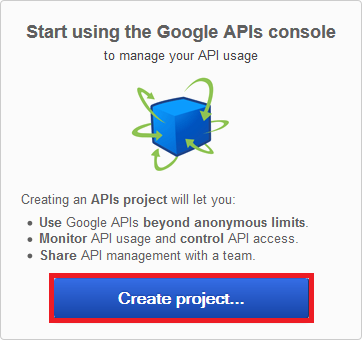
- Ulterior, vor trebui acceptate termenii și condițiile utilizării Google API:
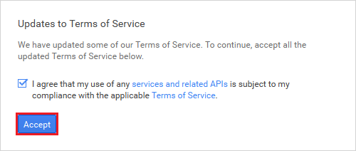
- Se identifică numărul de proiect care va fi utilizat de dispozitivul mobil pentru a se înregistra la serverul Google Cloud Messaging for Android (
SENDER_ID), acesta putând fi preluat din:- bara de adrese a aplicației de navigare 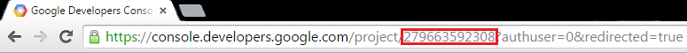
- secțiunea Overview a consolei Google API

- Se activează API-ul Cloud Messaging for Android din secțiunea Mobile APIs, ce poate fi accesată din APIs & auth → APIs a consolei Google API.

- Ulterior, vor putea fi vizualizate statistici cu privire la gradul de utilizare al acestui serviciu (număr de cereri realizate, distribuția codurilor de răspuns), precum și informații legate de monetizare.

- În secțiunea APIs & auth → Credentials se creează o cheie publică ce va fi utilizată pentru a transmite notificări de la serverul de aplicații la serverul Google Cloud Messaging for Android.
- Se selectează butonul Create New Key din secțiunea Public API access. 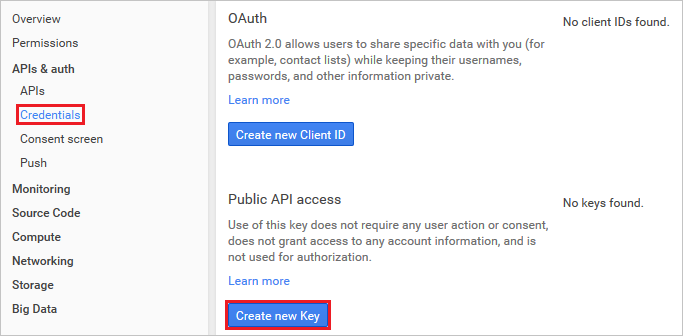
- Se specifică proprietățile cheii publice ce se dorește a fi generată în funcție de aplicația prin intermediul căreia se vor transmite notificări către dispozitivul Android prin intermediul Google Cloud Messaging.
- tipul cheii publice (variante disponibile: Server Key, Browser Key, Android Key, iOS Key) - se va selecta cel mai general tip, Server Key. 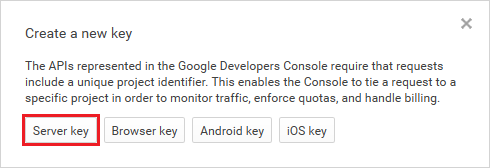
- adresele Internet de la care pot fi acceptate solicitări (câte o adresă Internet pe un rând): acest câmp poate fi lăsat vid, dacă vor fi acceptate cereri de la mai multe aplicații web, disponibile la diferite locații, sau se poate folosi adresa IP
0.0.0.0/0, în scop de testare. 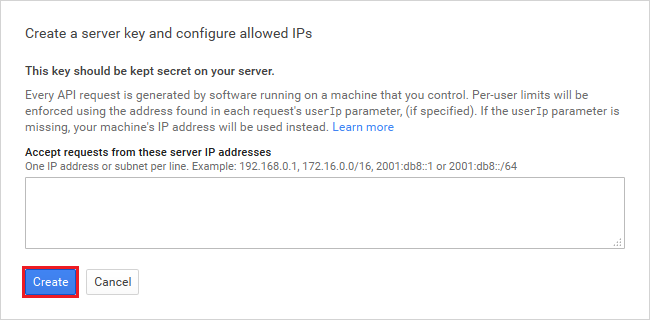
- Se identifică valoarea cheii publice care va fi utilizată 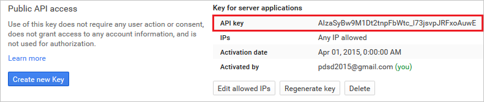
Configurare client
2. Se instalează SDK-ul Google Play Services, necesară autentificării / deautentificării la Google Cloud Messaging for Android din cadrul aplicației instalată pe dispozitivul mobil.
- În Eclipse Luna, se accesează Android SDK Manager
- din bara de unelte

- din meniul principal, Window → Android SDK Manager
- Se selectează următoarele pachete:

- din secțiunea
Android 4.1.2 (API 16), pachetulGoogle APIs - din sețiunea Extras, pachetul Google Play Services
- Biblioteca pentru accesarea Google Cloud Messaging va fi instalată la
<android-sdk>/extras/google/google_play_services/libproject/google-play-services_lib.
3. Se configurează emulatorul astfel încât să poată fi rulată aplicația Android ce folosește Google Cloud Messaging.
- AVD
- se creează un dispozitiv virtual pentru care va specifica la secțiunea Target valoarea Google APIs (Google Inc.)

- se asociază datele unui cont Google (nume de utilizator, parola) din Settings → Accounts, selectându-se opțiunea Add account
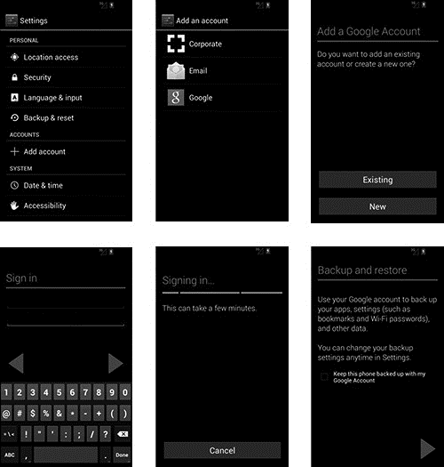
- Genymotion - vor trebui instalate manual
ARM TransalationșiGoogle Apps for Androidîntrucât suportul pentru acestea nu mai este asigurat începând cu versiunea 2.0- în Settings → ADB → ADB Connection Settings se indică locația unde se găsește instalat SDK-ul de Android

- se instalează ARM Translation 1.1 printr-o operație de tip drag-and-drop în ecranul principal al emulatorului
- se afișează o fereastră de dialog ce va conține mesajul
File transfer in progress…
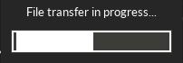 - odată realizat transferul, se afișează o fereastră de dialog prin care utilizatorul este atenționat de faptul că arhiva ar putea corupe dispozitivul virtual, solicitându-i-se acordul pentru a continua instalarea
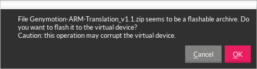 - odată realizată instalarea, se afișează o fereastră de dialog ce conține rezultatul operației
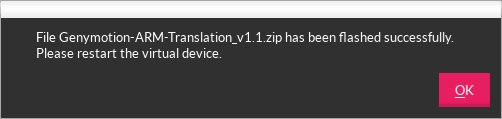
- se repornește emulatorul prin comanda
adb -s 192.168.56.101:5555 reboot
(sau
adb reboot<dacă există un sigur dispozitiv conectat la un moment dat) - se instalează
Google Apps for Androidcorespunzătoare versiunii sistemului de operare existentă pe dispozitivul virtual, printr-o operație de tip drag-and-drop în ecranul principal al emulatorului (sunt parcurse aceleași etape ca anterior)
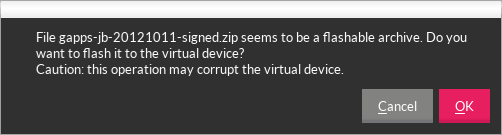
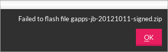 - indiferent de rezultat, se repornește emulatorul prin comanda
adb -s 192.168.56.101:5555 reboot
(respectiv
adb reboot) - se asociază datele unui cont Google (nume de utilizator, parola) din Settings → Accounts, selectându-se opțiunea Add account


- se actualizează Play Store prin accesarea opțiunii Settings de mai multe ori (procesul de actualizare va fi pornit în fundal, în mod automat)

4. În situația în care se va folosi un server CCS (XMPP), în prezent, nu mai este necesară o înregistrare suplimentară pentru a se obține acceptul Google de a utiliza serviciul de transmitere a mesajelor de pe dispozitivul mobil. Anterior, o astfel de solicitare trebuia transmisă la Upstream Google Cloud Messaging and User Notifications Sign-up.
Configurare server (opțional)
Ca atare, se va proiecta un server de aplicații care va trimite mesaje către serverul Google Cloud Messaging, respectiv va primi mesaje de la un client Android folosind protocolul HTTP. Pentru dezvoltarea acestei funcționalități, soluția aleasă se bazează pe pagini Internet generate cu Java Servlets și utilizând un motor pentru gestiunea bazelor de date MySQL, serverul web folosit fiind Apache Tomcat.
5. Se descarcă cea mai recentă versiune stabilă a serverului web Apache Tomcat (zip|tar.gz) și se dezarhivează.
6. Se descarcă cea mai recentă versiune stabilă a mediului de dezvoltare Eclipse IDE for Java EE Developers (Windows: 32-bit|64-bit, Linux: 32-bit|64-bit) și se integrează cu serverul web Apache Tomcat.
- Window → Preferences → Server → Runtime Environments și se accesează butonul Add…

- se specifică tipul serverului web (
Apache Tomcat v8.0)

- se precizează locația la care se găsește serverul web (directorul în care a fost dezarhivat, fără alte configurări) și versiunea de Java Runtime Environment


- Window → Show View → Other… → Servers → Server și se accesează legătura No servers are available. Click this link to create a new server… sau click pe butonul drept al mouse-ului în spațiul de lucru Server → New → Server
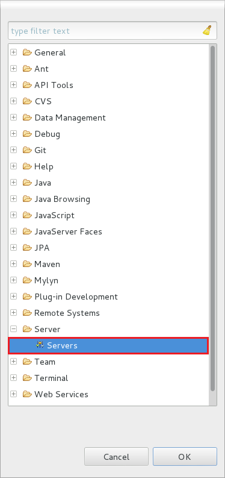

- se selectează serverul web definit anterior și se accesează butonul Finish

- se asociază proiectului un server web pe care va rula: click pe butonul drept al mouse-ului pe denumirea proiectului → Properties → Server și se selectează serverul web definit anterior

- se realizează o referință către biblioteca serverului web, aceasta fiind trecută în classpath: click pe butonul drept al mouse-ului pe denumirea proiectului → Build Path → Add Library
- se alege Server Runtime

- se indică serverul web definit anterior și se accesează butonul
Finish

7. Se descarcă și se instalează cea mai recentă versiune stabilă a motorului pentru baze de date MySQL.
- Windows: se poate folosi MySQL Community Server.
- Linux: se poate utiliza comanda
student@pdsd2015:~$ sudo apt-get install mysql-server
Pentru gestiunea propriu-zisă a bazelor de date, poate fi utiliza MySQL Workbench Windows|Ubuntu|Fedora Core|Red Hat, Mac OS X.
De asemenea, se poate accesa consola MySQL folosind comanda
student@pdsd2015:~$ mysql -u root -p
Va trebui indicată parola, atunci când aceasta este solicitată.
Proiectarea și dezvoltarea clientului
Proiectul Eclipse
eclipse.ini:--launcher.XXMaxPermSize 1024M --launcher.XXMaxPermSize 1024m --launcher.appendVmargs -vmargs -Dosgi.requiredJavaVersion=1.7 -Xms1024m -Xmx1024m
Se realizează o referință către biblioteca pentru accesarea Google Cloud Messaging care este localizată în <android-sdk>/extras/google/google_play_services/libproject/google-play-services_lib
- se accesează File → Import → Android → Existing Android Code Into Workspace

- se indică locația unde se găsește instalată biblioteca pentru accesarea Google Cloud Messaging, creându-se o copie a acestuia în spațiul de lucru (se bifează opțiunea Copy projects into workspace)

- în fereastra corespunzătoare proiectului aferent aplicației Android (click dreapta pe denumirea proiectului în Package Explorer → Properties), se accesează opțiunea Android și se specifică referința către biblioteca respectivă în secțiunea Library (accesând butonul Add)

Structura Proiectului
Aplicația Android care va rula pe dispozitivul mobil va consta din:
- o activitate (
GoogleCloudMessagingActivity) care:- verifică dacă pe dispozitivul mobil este instalat Google Play Services și dacă această aplicație este actualizată;
- permite înregistrarea dispozitivului mobil la serverul Google Cloud Messaging dacă această operație nu a fost realizată în prealabil (o astfel de informație ar trebui stocată în
SharedPreferencesastfel încât operația să fie realizată o singură dată); - transmite identificatorul de înregistrare obținut către serverul de aplicații (împreună cu alte informații prin care să poată fi recunoscut dispozitivul mobil - de exemplu, un nume de utilizator sau o adresă de posță electronică);
- un ascultător pentru mesajele cu difuzare (
GoogleCloudMessagingBroadcastReceiver) către care este livrat un mesaj transmis de serverul Google Cloud Messaging, prin intermediul unei intenții; - (opțional) un serviciu (
GoogleCloudMessagingIntentService) lansat în execuție în momentul în care este livrat mesajul (de către ascultător) în cadrul căruia acesta este procesat propriu-zis; utilizarea unui serviciu este necesară doar în situația în care prelucrarea mesajului se realizează într-un interval de timp mai mare, fiind necesar să se asigure faptul că dispozitivul mobil nu devine inactiv între timp.

Activitatea GoogleCloudMessagingActivity
Pe lângă implementarea interfeței grafice prin care se asigură interacțiunea cu utilizatorul, activitatea GoogleCloudMessagingActivity este responsabilă pentru:
1. verificarea compatibilității dispozitivului mobil pe care rulează aplicația cu Google Play Services, SDK pe care se bazează Google Cloud Messaging; această operație trebuie să se realizeze în momentul în care aplicația devine vizibilă (deci pe metoda onResume()), astfel încât și în situația în care activitatea a fost întreruptă, să se identifice situația în care aceasta a fost instalată sau actualizată:
private boolean checkPlayServices() { int resultCode = GooglePlayServicesUtil.isGooglePlayServicesAvailable(this); if (resultCode != ConnectionResult.SUCCESS) { if (GooglePlayServicesUtil.isUserRecoverableError(resultCode)) { GooglePlayServicesUtil.getErrorDialog(resultCode, this, Configuration.PLAY_SERVICES_RESOLUTION_REQUEST).show(); } else { Log.i(Constants.TAG, Constants.GOOGLE_PLAY_SERVICES_ERROR_MESSAGE2); finish(); } return false; } return true; }
În situația în care dispozitivul mobil este compatibil cu Google Play Services (rulează un sistem de operare Android cu o versiune mai mare decât 2.2), se lasă utilizatorului posibilitatea de a-l instala (sau actualiza, după caz) prin afișarea unei ferestre de dialog, altfel aplicația este terminată.
2. înregistrarea dispozitivului mobil la Google Cloud Messaging, în situația în care această operație nu s-a realizat în prealabil (nu există o astfel de valoare stocată ca preferință a utilizatorului):
private void registerInBackground() { new AsyncTask<Object, Integer, String>() { @Override protected String doInBackground(Object... params) { try { if (googleCloudMessaging == null) { googleCloudMessaging = GoogleCloudMessaging.getInstance(context); } registrationId = googleCloudMessaging.register(Configuration.PROJECT_NUMBER); // store the registration ID into the SharedPreferences // the ID is not yet registered with the application server Utilities.setInformationIntoSharedPreferences(GoogleCloudMessagingActivity.this, registrationId, Constants.FAILURE); } catch (IOException ioException) { registrationId = "An exception has occurred: " + ioException.getMessage(); if (Constants.DEBUG) { ioException.printStackTrace(); } } return registrationId; } @Override protected void onPostExecute(String registrationId) { Log.i(Constants.TAG, Constants.REGISTRATION_ID_INFORMATION_MESSAGE + registrationId); if (unregisteredFragment != null) { unregisteredFragment.setRegistrationIdTextView(registrationId); } } }.execute(null, null, null); }
doInBackground() a unui obiect de tip AsyncTask.
Testarea existenței unei valori corespunzătoare identificatorului de înregistrare în preferințele utilizatorului se face foarte ușor, acesta având o structură de tip asociere între o cheie și o valoare.
public static String getRegistrationIdFromSharedPreferences(Context context) { final SharedPreferences sharedPreferences = getSharedPreferences(context); String registrationId = sharedPreferences.getString(Constants.REGISTRATION_ID_PROPERTY, ""); if (registrationId.isEmpty()) { Log.i(Constants.TAG, Constants.REGISTRATION_ID_ERROR_MESSAGE); return Constants.EMPTY_STRING; } // check whether the application was updated // if it is the case, the registration ID previously supplied must be cleared // as it is not guaranteed to work with the current version int registeredApplicationVersion = sharedPreferences.getInt(Constants.APPLICATION_VERSION_PROPERTY, Integer.MIN_VALUE); int currentVersion = getApplicationVersion(context); if (registeredApplicationVersion != currentVersion) { Log.i(Constants.TAG, Constants.APPLICATION_VERSION_ERROR_MESSAGE); return Constants.EMPTY_STRING; } return registrationId; }
De remarcat este faptul că în preferințele utilizatorului va fi stocată și versiunea aplicației Android pentru care a fost generat identificatorul de înregistrare, iar în situația în care aceasta este actualizată, se va realiza o nouă înregistrare la serverul Google Cloud Messaging, de vreme ce o astfel de valoare identifică în mod unic o aplicație caracterizată prin denumirea pachetului și versiunea acesteia.
3. transmiterea identificatorului de înregistrare către serverul de aplicații printr-o cerere HTTP de tip POST care va conține și alte informații prin care să poată fi referit utilizatorul respectiv (de exemplu, numele de utilizator sau adresa de poștă electronică):
protected class SendRegistrationIdButtonClickListener implements Button.OnClickListener { @Override public void onClick(View view) { new AsyncTask<Object, Integer, Integer>() { @Override protected Integer doInBackground(Object... params) { try { HttpClient httpClient = new DefaultHttpClient(); HttpPost httpPost = new HttpPost(Constants.DEVICE_REGISTRATION_SERVICE_ADDRESS); // send the user name, email and registration ID as fields of the HTTP body to the application server List<NameValuePair> requestParameters = new ArrayList<NameValuePair>(); requestParameters.add(new BasicNameValuePair(Constants.USERNAME, usernameEditText.getText().toString())); requestParameters.add(new BasicNameValuePair(Constants.EMAIL, emailEditText.getText().toString())); requestParameters.add(new BasicNameValuePair(Constants.REGISTRATION_ID, registrationIdTextView.getText().toString())); UrlEncodedFormEntity urlEncodedFormEntity = new UrlEncodedFormEntity(requestParameters, HTTP.UTF_8); httpPost.setEntity(urlEncodedFormEntity); HttpResponse httpPostResponse = httpClient.execute(httpPost); // transmission of information to the application server was successful if (httpPostResponse.getStatusLine().getStatusCode() == 200) { return Constants.SUCCESS; } } catch (IOException ioException) { Log.e(Constants.TAG, "An exception has occurred: " + ioException.getMessage()); if (Constants.DEBUG) { ioException.printStackTrace(); } } // transmission of information to the application server was not successful return Constants.FAILURE; } @Override protected void onPostExecute(Integer result) { switch(result.intValue()) { case Constants.SUCCESS: // store the registration ID into the SharedPreferences // the ID is registered with the application server Utilities.setInformationIntoSharedPreferences(getActivity(), registrationIdTextView.getText().toString(), Constants.SUCCESS); // replace the existing fragment in order to forbid the user to register its ID to the registration server RegisteredFragment registeredFragment = new RegisteredFragment(); FragmentManager fragmentManager = getActivity().getFragmentManager(); FragmentTransaction fragmentTransaction = fragmentManager.beginTransaction(); fragmentTransaction.replace(R.id.container, registeredFragment); fragmentTransaction.commit(); Log.i(Constants.TAG, Constants.REGISTRATION_PROCESS_SUCCESS); break; case Constants.FAILURE: Log.i(Constants.TAG, Constants.REGISTRATION_PROCESS_FAILURE); break; } } }.execute(null, null, null); } }
În cadrul serverului de aplicații va trebui procesată o astfel de cerere prin stocarea informațiilor transmise în cadrul unei baze de date și transmiterea unui răspuns corespunzător prin care se indică rezultatul operației, pentru a fi marcat și la nivelul clientului (în preferințele utilizatorului).
Ascultătorul GoogleCloudMessagingBroadcastReceiver
Implementarea unui ascultător pentru mesaje cu difuzare poate fi realizată în două variante:
- în cazul în care procesarea mesajului implică operații triviale (ce pot fi realizate într-un interval de timp rezonabil), se poate defini un ascultător
BroadcastReceiver, prelucrarea propriu-zisă realizându-se în cadrul metodeionReceive()(ce primește ca parametri contextul și intenția care a apelat-o, cu informațiile din corpul mesajului atașate într-un obiect de tipBundle), apelată în mod automat în momentul în care mesajul este livrat. - în situația în care procesarea mesajului presupune mai multe operații realizate într-un interval de timp semnificativ, prelucrarea se va realiza în cadrul unui serviciu dedicat (de tip
IntentService), ce va rula în fundal, în timp ce se obține accesul la un tip de mutex ce împiedică dispozitivul mobil să intre într-o stare de inactivitate care ar suspenda tratarea evenimentului de livrare a unui mesaj, dacă aceasta nu este încă completată:- GoogleCloudMessagingBroadcastReceiver.java
public class GoogleCloudMessagingBroadcastReceiver extends WakefulBroadcastReceiver { @Override public void onReceive(Context context, Intent intent) { // create a component associated to the service that will handle the intent ComponentName component = new ComponentName( context.getPackageName(), GoogleCloudMessagingIntentService.class.getName() ); // start the service // maintain the mobile device awake startWakefulService(context, (intent.setComponent(component))); setResultCode(Activity.RESULT_OK); } }
Așa cum se poate observa, a fost utilizat un ascultător de tip WakefulBroadcastReceiver, delegarea procesării mesajului către serviciul dedicat făcându-se prin metoda startWakefulService ce asigură și obținerea accesului la mutexul care împiedică intrarea dispozitivului mobil într-o stare de inactivitate.
Serviciul GoogleCloudMessagingIntentService
În cadrul serviciului pentru tratarea evenimentului (de tip IntentService) are loc procesarea propriu-zisă a mesajului, aceasta fiind realizată în cadrul metodei onHandleIntent() care primește ca parametru aceeași intenție care a fost transmisă ascultătorului, și pentru care a fost obținut mutextul care împiedică intrarea dispozitivului mobil într-o stare de inactivitate.
Prelucrarea unui mesaj se face în funcție de tipul acestuia, furnizat de metoda getMessageType() a obiectului de tip GoogleCloudMessaging, pe baza informațiilor din intenție. Odată cunoscut tipul mesajului și datele asociate prin Bundle, utilizatorul poate realiza orice acțiune, de la transmiterea unei notificări la modificarea conținutului unor controale grafice din cadrul activității.
completeWakefulIntent() căreia i se transmite ca parametru aceeași intenție pentru care a fost obținută această resursă.
- GoogleCloudMessagingIntentService.java
public class GoogleCloudMessagingIntentService extends IntentService { public GoogleCloudMessagingIntentService() { super(Constants.TAG); } @Override protected void onHandleIntent(Intent intent) { // the intent is supplied via the BroadcastReceiver GoogleCloudMessaging googleCloudMessaging = GoogleCloudMessaging.getInstance(this); String messageType = googleCloudMessaging.getMessageType(intent); Bundle extras = intent.getExtras(); if (!extras.isEmpty()) { // filter the message according to its type if (GoogleCloudMessaging.MESSAGE_TYPE_SEND_ERROR.equals(messageType)) { sendNotification(extras); } else if (GoogleCloudMessaging.MESSAGE_TYPE_DELETED.equals(messageType)) { sendNotification(extras); } else if (GoogleCloudMessaging.MESSAGE_TYPE_MESSAGE.equals(messageType)) { sendNotification(extras); } } // release the wake lock provided by the WakefulBroadcastReceiver. GoogleCloudMessagingBroadcastReceiver.completeWakefulIntent(intent); } // create a notification containing the message and post it private void sendNotification(Bundle bundle) { Intent notificationHandlerIntent = new Intent(this, NotificationHandlerActivity.class); notificationHandlerIntent.putExtras(bundle); TaskStackBuilder taskStackBuilder = TaskStackBuilder.create(this); taskStackBuilder.addParentStack(NotificationHandlerActivity.class); taskStackBuilder.addNextIntent(notificationHandlerIntent); PendingIntent notificationHandlerPendingIntent = taskStackBuilder.getPendingIntent( 0, PendingIntent.FLAG_UPDATE_CURRENT); NotificationCompat.Builder builder = new NotificationCompat.Builder(this) .setSmallIcon(R.drawable.ic_launcher) .setContentTitle(Constants.TAG) .setStyle(new NotificationCompat.BigTextStyle().bigText(Constants.NOTIFICATION_MESSAGE)) .setContentText(Constants.NOTIFICATION_MESSAGE); builder.setContentIntent(notificationHandlerPendingIntent); NotificationManager notificationManager = (NotificationManager)this.getSystemService(Context.NOTIFICATION_SERVICE); notificationManager.notify(Constants.NOTIFICATION_ID, builder.build()); } }
Permisiuni AndroidManifest.xml
- în fișierul
AndroidManifest.xmlse indică versiunea Google Cloud Messaging în cadrul elementului<application>:
<meta-data android:name="com.google.android.gms.version" android:value="@integer/google_play_services_version" />
- în fișierul
AndroidManifest.xmlse precizează permisiunile necesare pentru ca aplicația să poată utiliza funcționalitățile oferite de Google Cloud Messaging
<manifest package="ro.pub.cs.systems.pdsd.lab08.googlecloudmessaging" ...> <uses-permission android:name="android.permission.INTERNET" /> <uses-permission android:name="android.permission.GET_ACCOUNTS" /> <uses-permission android:name="android.permission.WAKE_LOCK" /> <uses-permission android:name="com.google.android.c2dm.permission.RECEIVE" /> <permission android:name="ro.pub.systems.pdsd.lab08.googlecloudmessaging.permission.C2D_MESSAGE" android:protectionLevel="signature" /> <uses-permission android:name="ro.pub.systems.pdsd.lab08.googlecloudmessaging.permission.C2D_MESSAGE" /> <application ...> <meta-data android:name="com.google.android.gms.version" android:value="@integer/google_play_services_version" /> <activity android:name="ro.pub.cs.systems.pdsd.lab08.googlecloudmessaging.view.GoogleCloudMessagingActivity" android:label="@string/app_name" > <intent-filter> <action android:name="android.intent.action.MAIN" /> <category android:name="android.intent.category.LAUNCHER" /> </intent-filter> </activity> <activity android:name="ro.pub.cs.systems.pdsd.lab08.googlecloudmessaging.view.NotificationHandlerActivity" android:parentActivityName="ro.pub.cs.systems.pdsd.lab08.googlecloudmessaging.view.GoogleCloudMessagingActivity"> <meta-data android:name="android.support.PARENT_ACTIVITY" android:value="ro.pub.cs.systems.pdsd.lab08.googlecloudmessaging.view.GoogleCloudMessagingActivity" /> </activity> <receiver android:name="ro.pub.cs.systems.pdsd.lab08.googlecloudmessaging.controller.GoogleCloudMessagingBroadcastReceiver" android:permission="com.google.android.c2dm.permission.SEND" > <intent-filter> <action android:name="com.google.android.c2dm.intent.RECEIVE" /> <category android:name="ro.pub.cs.systems.pdsd.lab08.googlecloudmessaging.controller.GoogleCloudMessagingBroadcastReceiver" /> </intent-filter> </receiver> <service android:name="ro.pub.cs.systems.pdsd.lab08.googlecloudmessaging.controller.GoogleCloudMessagingIntentService" /> </application> </manifest>
android:minSdkVersion va avea o valoare egală sau mai mare cu 8.
- permisiunea
android.permission.INTERNETeste necesară pentru ca aplicația să poate transmite identificatorul său serverului de aplicații, prin intermediul căruia se realizează înregistrarea sa; - permisiunea
android.permission.GET_ACCOUNTSeste necesară întrucât Google Cloud Messaging solicită (pentru sisteme de operare Android anterioare versiunii 4.0.4) un cont Google; - permisiunea
android.permission.WAKE_LOCK(opțională) este necesară pentru a se preveni întreruperea activității în momentul în care este primit un mesaj; - permisiunea
android.permission.RECEIVEeste necesară pentru ca aplicația să se poată înregistra (în cadrul serverului de aplicații) și pentru a putea primi mesaje; - permisiunea de tip
permission.C2D_MESSAGE(prefixată de denumirea pachetului care identifică în mod unic aplicația) pentru a preveni altă aplicație Android să se înregistreze (în cadrul serverului de aplicații) și să primească mesajele care îi sunt destinate;
- un ascultător (de tipul
com.google.android.c2dm.intent.RECEIVE) având permisiuneacom.google.android.c2dm.SENDastfel încât doar motorul Google Cloud Messaging să îi poată transmite mesaje
category a ascultătorului trebuie să aibă ca valoare denumirea pachetului aplicației Android.
WakefulBroadcastReceiver, creând un mutex parțial pentru a se asigura faptul că dispozitivul mobil rulează.
- un serviciu (de obicei, un obiect de tip
IntentService) - opțional - căruia i se transmite mesajul Google Cloud Messaging (de către obiectul de tipWakefulBroadcastReceiver) având sarcina procesării sale și asigurând faptul că dispozitivul nu își întrerupe activitatea în timpul acestui proces
BroadcastReceiver).
Reguli Proguard
Se precizează regulile pentru obfuscatorul Proguard (în fișierul proguard-project.txt din rădăcina proiectului), astfel încât acesta să nu elimine clasele necesare:
-keep class * extends java.util.ListResourceBundle { protected Object[][] getContents(); } -keep public class com.google.android.gms.common.internal.safeparcel.SafeParcelable { public static final *** NULL; } -keepnames @com.google.android.gms.common.annotation.KeepName class * -keepclassmembernames class * { @com.google.android.gms.common.annotation.KeepName *; } -keepnames class * implements android.os.Parcelable { public static final ** CREATOR; }
Proiectarea și dezvoltarea serverului (opțional)
Arhitectura Google Cloud Messaging implică existența a două servere:
1. un server de conexiune furnizat de serviciul Google Cloud Messaging, prin intermediul căruia pot fi livrate mesaje către un client Android, transmise anterior de la un server de aplicații; la rândul său, acesta este disponibil în două variante:
În alegerea uneia dintre cele două variante ale serverului de conexiune, trebuie să se țină cont de funcționalitățile puse la dispoziție de acestea:
| FUNCȚIONALITATE | HTTP | CCS/XMPP |
|---|---|---|
| sens conexiune | server GCM → client Android (unidirecțional) | server GCM ↔ client Android (bidirecțional) |
| tip comunicație | sincron expeditorul se conectează la destinatar printr-o conexine HTTP nepersistentă, transmite o cerere POST și se blochează în așteptarea unui răspuns | asincron expeditorul se conectează la destinatar printr-o conexiune XMPP persistentă, putând trimite/primi mesaje la viteză maximă (rezultatul fiind transmis sub forma unor notificări codificate utilizând același protocol) |
| corp mesaj | text sau JSON transmise prin intermediul unei cereri HTTP POST | JSON încapsulat într-un mesaj XMPP |
| destinatar multiplu | NU (pentru mesaje text) DA (pentru mesaje JSON) | NU |
| înregistrare anterioară | NU | DA |
2. un server de aplicații, implementat de programator, pentru a transmite mesaje către serverul de conexiune Google Cloud Messaging ce vor fi livrate ulterior clientului Android (atunci când acesta devine disponibil); acesta trebuie să îndeplinească mai multe condiții:
- să poată comunica cu clientul Android (să fie disponibil la o adresă publică în Internet sau să facă parte din cadrul aceleiași rețele, în caz contrar);
- să construiască mesaje către serverul de conexiune Google Cloud Messaging într-un format acceptat de acesta;
- să poată stoca o cheie publică prin intermediul căreia să se autentifice în cadrul serverului de conexiune Google Cloud Messaging precum și identificatorii de identificare a clienților Android pentru a specifica locația la care trebuie livrate mesajele;
- să poată primi mesaje și să își adapteze rata de transmisie în funcție de informațiile furnizate cu privire la rezultatul acestora;
- să genereze identificatori unici pentru mesajele pe care le trimite.
Structura unui mesaj
Mesajele interschimbate între serverul de aplicații și serverul de conexiune Google Cloud Messaging de tip HTTP pot fi:
- o cerere de tip POST transmisă către https://android.googleapis.com/gcm/send și formată din:
- un antet care specifică informațiile necesare autentificării în cadrul serviciului Google Cloud Messaging, precum și formatul mesajului;
- un corp (în format text sau JSON) în care informațiile propriu-zise sunt conținute în perechi de tip (atribut, valoare).
- un răspuns care conține rezultatul operației precum și alte informații suplimentare.
Cerere: server de aplicații → server de conexiune GCM
Un mesaj transmis de serverul de aplicații către serverul de conexiune Google Cloud Messaging de tip HTTP este o cerere de tip POST ce conține informațiile ce trebuie livrate către unul sau mai multe dispozitive mobile (în momentul în care acestea vor deveni disponibile).
// the address of the Google Cloud Messaging HTTP connection server // to which the application server sends a POST request in order to be further transmitted to the mobile device final public static String GCM_SERVER_ADDRESS = "https://android.googleapis.com/gcm/send"; // ... HttpPost httpRequest = new HttpPost(GCM_SERVER_ADDRESS);
Un astfel de mesaj va trebui să conțină:
- în antet:
- informațiile de autentificare în cadrul serverului Google Cloud Messaging - cheia publică obținută prin intermediul Google Developer's Console, certificându-se faptul că există drepturile necesare pentru realizarea unei conexiuni de acest tip;
- informații referitoare la tipul de mesaj (text sau JSON);
- în corp: datele propriu-zise.
Antet
În cadrul antetului cererii de tip POST trebuie să fie incluse câmpurile:
Authorization- conține informațiile necesare procesului de autentificare în cadrul serverului Google Cloud Messaging, având formakey=, urmată de cheia publică furnizată prin intermediul Google Developer's Console.Content-Type- indică tipul pe care îl are corpul mesajului, acesta putând fi text (application/x-www-form-urlencoded;charset=UTF-8) sau JSON (application/json).
Content-Type, se așteaptă ca mesajul să aibă un corp de tip text.
/** * HTTP headers * * Authorization: key=API key provided from Google Developer Console * Content-Type: the format of the HTTP body (may be omitted for plain text) * - application/x-www-form-urlencoded;charset=UTF-8 for plain text * - application/json for JSON * */ httpRequest.setHeader("Authorization", "key=" + Constants.API_KEY); httpRequest.setHeader("Content-Type", "application/json");
Corp
Informațiile conținute de corpul unei cereri de tip POST au forma unor perechi (cheie, valoare), fiind definită o serie de parametrii standard, în funcție de formatul în care este transmis mesajul.
| PARAMETRU | DESCRIERE | text | JSON | obligativitate |
|---|---|---|---|---|
registration_id | un identificator de înregistrare descriind dispozitivul mobil către care se dorește să se livreze mesajul respectiv | ✔ | ✘ | ✔ |
registration_ids | o listă conținând 1-1000 identificatori de înregistrare indicând dispozitivele mobile către care se dorește să se livreze mesajul respectiv | ✘ | ✔ | ✔ |
notification_key | șir de caractere asociat mai multor dispozitive mobile (1-10) ce aparțin aceluiași utilizator | ✔ | ||
collapse_key | șir de caractere (aleator, definit de utilizator) folosit pentru a identifica mesajele de același tip, astfel încât, pe serverul Google Cloud Messaging să se stocheze doar cea mai recentă valoare asociată, în scopul optimizării traficului de mesaje către dispozitivul mobil (dacă acesta nu este disponibil la un moment dat și au fost transmise mai multe mesaje, va fi stocat doar cel mai recent); se permite stocarea a maximum 4 chei de acest tip pe serverul Google Cloud Messaging | ✔ | ✔ | |
data | obiect JSON format din perechi (atribut, valoare) reprezentând conținutul propriu-zis al mesajului, acestea fiind incluse în cadrul intenției sub forma unui obiect Bundle (ca extras), având aceeași structură;atributul poate avea orice valoare, cu excepția unor cuvinte rezervate ( from, google.*), evitându-se pe cât posibil folosirea denumirilor de parametri, întrucât aceștia vor fi suprascriși;pentru valoare poate fi utilizat orice tip de obiect JSON, însă la nivelul serverului Google Cloud Messaging se face conversia la șiruri de caractere; dimensiunea obiectului este limitată la 4kb; nu există limitări în privința numărului de perechi (atribut, valoare); | ✔ data.<atribut> | ✔ | |
delay_while_idle | indică faptul că mesajul nu trebuie transmis imediat dacă dispozitivul se află într-o stare de inactivitate, urmând a fi livrat în momentul în care acesta devine activ; valoarea implicită este false | ✔ | ✔ | |
time_to_live | durata de stocare a mesajului pe serverul Google Cloud Messaging (exprimată în secunde) în situația în care dispozitivul mobil nu este disponibil; valoarea implicită este de 4 săptămâni | ✔ | ✔ | |
restricted_package_name | șir de caractere referind denumirea pachetului corespunzător unei aplicații Android, astfel încât mesajul să fie livrat doar acelor identificatori de înregistrare care au fost generați pentru acesta | ✔ | ✔ | |
dry_run | utilizat în scop de testare, pentru a verifica funcționalitatea cererii de tip POST fără a transmite propriu-zis un mesaj către dispozitivul mobil; valoarea implicită este false | ✔ | ✔ |
registration_id / registration_ids, fie prin parametrul notification_key.
data.<atribut> pentru fiecare informație, asociindu-i-se valoarea respectivă. În această situație, se mențin restricțiile din cazul mesajelor de tip JSON.
/** * HTTP body * * -> registration_id/registration_ids indicates the recipient/recipients * (for each mobile device to which the message is to be transmitted the message must specify * the id provided by the GCM server during the registration process) * * -> data contains the payload to be transmitted; the developer may define its own keys * * -> other fields: collapse_key, delay_while_idle, time_to_live, restricted_package_name, dry_run * * The complete list of the message parameters can be found out at: * http://developer.android.com/google/gcm/server.html#params */ JSONObject requestBody = new JSONObject(); JSONArray registrationIds = new JSONArray(); registrationIds.add(registrationId); requestBody.put(Constants.REGISTRATION_IDS, registrationIds); JSONObject payload = new JSONObject(); payload.put(Constants.MESSAGE, message); requestBody.put(Constants.DATA, payload);
O astfel de cerere va avea forma:
Authorization:key=...
Content-Type:application/json
{
"registration_ids": ["..."],
"data": {
"message": "..."
}
}
Ulterior construirii cererii, aceasta va trebui transmisă, operația fiind realizată sincron, producând blocarea metodei în așteptarea răspunsului de la server:
CloseableHttpClient httpClient = HttpClients.custom().setSSLHostnameVerifier(new NoopHostnameVerifier()).build(); // ... httpRequest.setEntity(new StringEntity(JSONValue.toJSONString(requestBody))); // send the request HttpResponse httpResponse = httpClient.execute(httpRequest);
Răspuns: server de conexiune GCM → server de aplicații
Răspunsul transmis de serverul de conexiune la Google Cloud Messaging către serverul de aplicații conține rezultatul operației solicitate, acesta putând fi investigat prin intermediul codului de stare:
int responseCode = httpResponse.getStatusLine().getStatusCode();
Aceasta poate avea valorile:
200- dacă mesajul a fost procesat cu succes;- o valoare diferită de
200- în situația în care mesajul a fost respins de serverul Google Cloud Messaging.
Mesaj procesat cu succes
În situația în care mesajul a fost procesat cu succes, codul de stare returnat este 200, iar corpul răspunsului conține informații suplimentare, reprezentate sub forma unor perechi de tip (atribut, valoare) în care există un set de parametri predefiniți.
text
Există două variante de răspunsuri:
- mesaj care a fost procesat cu succes
1: id=identificatorul mesajului care a fost transmis 2(opțional): registration_id=identificator de înregistrare canonic al dispozitivului mobil stocat pe serverul Google Cloud Messaging
- mesaj care nu a fost procesat cu succes
1: Error=cod de eroare furnizat de serverul Google Cloud Messaging
Algoritmul de procesare a unui răspuns este următorul:
if (firstLine.startsWith("id")) {
if (secondLine.equals("registration_id")) {
old_registration_id = get registration_id from the request field
replace old_registration_id with new registration_id in the request / application server database
}
} else {
switch(Error) {
case "NotRegistered":
// the application was uninstalled from the device
// or it does not have a broadcast receiver in order to process com.google.android.c2dm.intent.RECEIVE intents
remove the registration ID from the application server database
break;
default:
// non-recoverable error regarding the registration ID
remove the registration ID from the application server database
break;
}
}
JSON
| PARAMETRU | DESCRIERE |
|---|---|
multicast_id | identificator unic ce reprezintă un mesaj transmis către mai multe dispozitive mobile |
success | numărul de mesaje care au fost procesate cu succes |
failure | numărul de mesaje care nu au fost procesate cu succes |
canonical_ids | număr de rezultate care conțin un identificator de înregistrare canonic |
results | listă de obiecte conținând starea mesajelor procesate, în ordinea în care au fost incluse în cadrul solicitării (pe baza identificatorului de înregistrare): ♦ message_id: șir de caractere reprezentând mesajul respectiv, în situația în care a fost procesat cu succes♦ registration_id: în situația în care este inclus, specifică faptul că mesajul a fost procesat, dar serverul Google Cloud Messaging deține un alt identificator de înregistrare canonic pentru dispozitivul mobil, astfel încât solicitările ulterioare ar trebui să îl utilizeze pentru a nu fi respinse; nu este inclus dacă s-a produs o eroare♦ error: șir de caractere indicând eroarea ce s-a produs în timpul procesării mesajului; valoarea Unavailable indică faptul că serverul Google Cloud Messaging nu era disponibil la momentul transmiterii solicitării, astfel încât aceasta trebuie retransmisă |
Algoritmul de procesare a unui răspuns este următorul:
if (failure != 0 && canonical_ids != 0) {
for-each (result ∈ results) {
if (result.registration_id) {
// the old registration ID is not included within the response
old_registration_id = get registration_id from the request field registration_ids, having the same index
replace old_registration_id with new result.registration_id in the request
} else {
switch(error) {
case "Unavailable":
retry sending the request
break;
case "NotRegistered":
// the application was uninstalled from the device
// or it does not have a broadcast receiver in order to process com.google.android.c2dm.intent.RECEIVE intents
remove the registration ID from the application server database
break;
default:
// non-recoverable error regarding the registration ID
remove the registration ID from the application server database
break;
}
}
}
}
Mesaj respins de serverul Google Cloud Messaging
În situația în care mesajul a fost respins de serverul Google Cloud Messaging, pot fi returnate mai multe coduri de stare:
| COD DE STARE | DESCRIERE |
|---|---|
| 400 | (doar pentru mesaje JSON) eroare ce indică faptul că mesajul nu a putut fi parsat ca JSON sau conține câmpuri invalide (fie atribute - denumire, fie valoare), detalii suplimentare fiind incluse în corpul mesajului pentru a remedia problema înainte de retransmisie |
| 401 | eroare privind procesul de autentificare a serverului de aplicații în cadrul serverului Google Cloud Messaging |
| 5xx | eroare în cadrul serverului Google Cloud Messaging (în timpul procesării mesajului) sau indisponibilitate temporară a acestuia; mesajul trebuie transmis potrivit informațiilor furnizate de antetul Retry-After |
Cele mai frecvente tipuri de erori sunt:
MissingRegistration- cauzată de faptul că nu se include câmpulregistration_id(text) /registration_ids(JSON) în corpul mesajului;InvalidRegistration- valoarea identificatorului de înregistrare trimisă prin mesaj este diferită de valoarea primită de telefon prin intențiacom.google.android.c2dm.intent.REGISTRATION;MismatchSenderId- utilizatorul care a transmis mesajul nu are permisiunea de a o face (în cadrul procesului de înregistrare a dispozitivului mobil se precizează care sunt utilizatorii care pot transmite mesaje);NotRegistered- identificatorul de înregistrare nu mai este valid, în următoarele cazuri:- aplicația Android anulează înregistrarea la serverul Google Cloud Messaging folosind o intenție de tip
com.google.android.c2dm.intent.UNREGISTER; - aplicația Android a fost actualizată astfel încât să nu mai prelucreze intenții de tip
com.google.android.c2dm.intent.RECEIVE. - aplicația Android a fost dezinstalată de pe dispozitivul mobil (în acest caz, nu se garantează că procesul de anulare a înregistrării la Google Cloud Messaging va fi realizată automat);
- identificatorul de înregistrare a expirat;
MessageTooBig- dimensiunea mesajului propriu-zis (atât a valorilor, cât și a atributelor) depășește 4096 octețiInvalidDataKey- mesajul propriu-zis include parametrii care sunt rezervați (from,google.*) spre a fi utilizați de intențiacom.google.android.c2dm.intent.RECEIVE;InvalidTtl- valoarea parametruluitime_to_livenu este o valoare întreagă (exprimând o durată de timp, în secunde) cuprinsă între 0 și 2419200 (4 săptămâni);- cod de stare 401 - utilizatorul care a transmis un mesaj către serverul Google Cloud Messaging nu a putut fi autentificat datorită uneia dintre următoarele cauze:
- lipsește câmpul
Authorizationdin antetul mesajului sau a fost folosită o sintaxă incorectă; - este folosit un număr de proiect invalid drept cheie publică;
- cheia publică este validă, însă serviciul Google Cloud Messaging este dezactivat pentru contul care a transmis mesajul respectiv;
- mesajul a fost transmis de pe un server de aplicații de la o adresă Internet care nu a fost precizată la momentul în care a fost generată cheia publică.
InternalServerError/ cod de stare 500 - s-a produs o eroare pe serverul Google Cloud Messaging la procesarea mesajului, acesta trebuind retransmis; în cazul în care problema persistă, aceasta trebuie raportată la https://groups.google.com/forum/?fromgroups#!forum/android-gcm;Unavailable/ cod de stare 501-599 - mesajul nu a putut fi procesat de serverul Google Cloud Messaging în timp util și trebuie retransmis ținând cont de următoarele recomandări:- dacă este inclus antetul
Retry-After, trebuie respectată valoarea indicată; - trebuie implementat un mecanism de adaptare a transmisiei (eng. exponential back-off), astfel încât perioada după care se retransmite un mesaj să fie modificată în mod exponențial după o încercare eșuată; în cazul în care se transmit mai multe mesaje, acestea trebuie tratate independent; utilizatorilor care transmit prea multe mesaje către serverul Google Cloud Messaging li se refuză accesul ulterior;
InvalidPackageName- mesajul a fost transmis folosind un identificator de înregistrare
Tratarea cererilor de înregistrare
Un server de aplicații trebuie să trateze și mesajele provenite de la clientul Android (cereri de înregistrare), stocând informațiile referitoare la identificatorii de înregistrare în baza de date locală, pentru a fi utilizate ulterior, când se dorește precizarea unei locații către care să fie livrat un mesaj.
Comunicația dintre clientul Android și serverul de aplicații poate folosi un protocol de comunicație definit de utilizator, folosind propriile reguli pentru definirea mesajelor schimbate între aceste entități.
@Override public void doPost(HttpServletRequest request, HttpServletResponse response) throws ServletException, IOException { Enumeration<String> parameters = request.getParameterNames(); String registrationId = null; String username = null; String email = null; while (parameters.hasMoreElements()) { String parameter = (String)parameters.nextElement(); if (parameter.equals(Constants.REGISTRATION_ID)) { registrationId = request.getParameter(parameter); } if (parameter.equals(Constants.USERNAME)) { username = request.getParameter(parameter); } if (parameter.equals(Constants.EMAIL)) { email = request.getParameter(parameter); } } if (registrationId != null && !registrationId.isEmpty() && username != null && !username.isEmpty() && email != null && !email.isEmpty()) { ArrayList<String> columnNames = new ArrayList<String>(); columnNames.add(Constants.REGISTRATION_ID); columnNames.add(Constants.USERNAME); columnNames.add(Constants.EMAIL); ArrayList<String> values = new ArrayList<String>(); values.add(registrationId); values.add(username); values.add(email); try { dataBaseWrapper.insertValuesIntoTable(Constants.TABLE_NAME, columnNames, values, false); } catch (SQLException | DataBaseException exception) { System.out.println("An exception has occurred: "+exception.getMessage()); if (Constants.DEBUG) { exception.printStackTrace(); } } response.setStatus(HttpServletResponse.SC_OK); } else { response.setStatus(HttpServletResponse.SC_BAD_REQUEST); } }
Se observă faptul că se prelucrează cererea de tip POST, iterându-se pe toți parametrii incluși în scopul identificării valorilor asociate atributelor denumite nume de utilizator, adresă de poștă electronică și identificator de înregistrare (conform protocolului de comunicație definit de utilizator), aceștia fiind stocați în baza de date locală pentru a fi utilizați în transmiterea ulterioară a unui mesaj.
setStatus() a obiectului HttpServletResponse) desemnând rezultatul procesării mesajului, în caz contrar clientul Android blocându-se până la expirarea perioadei de timp pentru așteptare (eng. timeout).
Activitate de Laborator
1. Să se acceseze Google Developer's Console, după ce a fost realizată autentificarea cu datele contului Google (nume de utilizator, parolă):
- se generează un număr de proiect;
- se activează serviciul Google Cloud Messaging;
- se generează o cheie publică pentru transmiterea de mesaje provenind de la un server, indiferent de adresa Internet la care se găsește acesta.
Mai multe detalii pot fi obținute în secțiunea Configurare.
MismatchSenderId.
Clientul Android
2. În contul Github personal, să se creeze un depozit denumit 'Laborator08-Client'. Inițial, acesta trebuie să fie gol (nu trebuie să bifați nici adăugarea unui fișier README.md, nici a fișierului .gitignore sau a a fișierului LICENSE).
3. Să se cloneze în directorul de pe discul local conținutul depozitului la distanță de la https://www.github.com/pdsd2015/Laborator08-Client.
În urma acestei operații, directorul Laborator08-Client va trebui să se conțină directoarele labtasks și solutions.
student@pdsd2015:~$ git clone https://www.github.com/pdsd2015/Laborator08-Client
4. Să se încarce conținutul descărcat în cadrul depozitului 'Laborator08-Client' de pe contul Github personal.
student@pdsd2015:~$ cd Laborator08-Client student@pdsd2015:~/Laborator08-Client$ git remote add Laborator08-Client_perfectstudent https://github.com/perfectstudent/Laborator08-Client student@pdsd2015:~/Laborator08-Client$ git push Laborator08-Client_perfectstudent master
5. Să se importe în mediul integrat de dezvoltare Eclipse Luna SR1a (4.4.1) proiectele google-play-service_lib și GoogleCloudMessagingClient din directorul labtasks (în această ordine).
Să se configureaze mașina pe care va rula aplicația:
- în cazul în care se utilizează un emulator, se configurează astfel încât acesta să aibă instalat Google Play Services;
- în cazul în care se utilizează un dispozitiv fizic, acesta trebuie să ruleze un sistem de operare Android cu o versiune ulterioară 2.2, având asociat un cont Google.
$HOME.
Mai multe detalii pot fi obținute în secțiunea Configurare client
6. În interfața ro.pub.cs.systems.pdsd.lab08.googlecloudmessaging.general.Constants, trebuie modificate următoarele valori, numai în situația în care se folosește un server web Apache Tomcat:
PROJECT_NUMBER- cu numărul de proiect generat de consola Google API;- adresele Internet pentru serviciile care expun funcționalități către dispozitivul mobil:
- dispozitiv mobil - adresa Internet indicată ca default gateway a rețelei de calculatoare din care fac parte dispozitivul mobil și mașina pe care se găsește serverul de aplicații;
- AVD - 10.0.2.1;
- Genymotion - 192.168.56.1.
server.xml). În situația în care, în momentul în care se încearcă să se realizeze conexiunea la serverul de aplicații, se obține o excepție de tip Timeout / Connection Refused, investigați dacă este permisă comunicația pe portul respectiv.
7. Să se ruleze aplicația Android și să se genereze identificatorul de înregistrare, care va fi transmis către serverul de aplicații prin accesarea butonului Send Registration ID.


În fragmentul UnregisteredFragment din pachetul ro.pub.cs.systems.pdsd.lab08.googlecloudmessaging.view, pe clasa ascultător asociată butonului, să se transmită o cerere HTTP de tip POST către componenta din serverul de aplicații, responsbilă cu înregistrarea dispozitivelor mobile (disponibilă la Constants.DEVICE_REGISTRATION_SERVICE_ADDRESS).
Aceasta va conține următorii parametrii:
Constants.USERNAME- numele de utilizator din câmpul text;Constants.EMAIL- adresa de poștă electronică din câmpul text;Constants.REGISTRATION_ID- identificatorul de înregistrare furnizat de serviciul Google Cloud Messaging.
Codificarea utilizată pentru această comunicație este UTF-8.
În situația în care codul întors pe linia de stare în răspuns este 200, se va întoarce rezultatul Constants.SUCCESS.
8. În situația în care înregistrarea a fost realizată cu succes, interfața grafică a aplicației este modificată în sensul în care se dorește afișarea unei liste cu utilizatorii care au fost înregistrați deja, către care se dorește transmiterea unui mesaj de notificare.

a) Pe firul de execuție RegisteredDevicesFetcher din fragmentul RegisteredFragment, să se transmită o cerere HTTP de tip GET către către componenta din serverul de aplicații, responsbilă cu furnizarea listei dispozitivelor mobile înregistrate, în format JSON (disponibilă la Constants.REGISTERED_DEVICES_SERVICE_ADDRESS).
Să se prelucreze documentul JSON obținut, astfel încât prin intermediul acestuia să se populeze un tablou de obiecte RegisteredDevice, transmis ca parametru adaptorului obiectului de tip Spinner în care pot fi vizualizate astfel de informații.
final ArrayList<RegisteredDevice> registeredDevices = new ArrayList<RegisteredDevice>(); // ... registeredDevicesSpinner.post(new Runnable() { @Override public void run() { RegisteredDevicesAdapter registeredDevicesAdapter = new RegisteredDevicesAdapter(getActivity(), registeredDevices); registeredDevicesSpinner.setAdapter(registeredDevicesAdapter); } });
Documentul JSON conține informații despre identificatorul din baza de date, identificatorul de înregistrare furnizat de serverul GoogleCloudMessaging, numele de utilizator, adresa de poștă electronică și momentul de timp la care a fost realizată înregistratrea.
[
{
"id": ...,
"registration_id": "...",
"username": "...",
"email": "...",
"timestamp": "...",
},
...
]
| atribut JSON | tip de date | detaliu |
|---|---|---|
Constants.ID | int | identificator în baza de date |
Constants.REGISTRATION_ID | String | identificator de înregistrare furnizat de serverul Google Cloud Messaging |
Constants.USERNAME | String | numele de utilizator |
Constants.EMAIL | String | adresa de poștă electonică |
Constants.TIMESTAMP | String | momentul de timp la care a fost realizată înregistrarea |
b) Pe firul de execuție MessagePushExecutor din fragmentul RegisteredFragment, să se transmită o cerere HTTP de tip POST către către componenta din serverul de aplicații, responsbilă cu transmiterea unui mesaj sub forma unei notificări (disponibilă la Constants.MESSAGE_PUSH_SERVICE_ADDRESS).
Aceasta va conține următorii parametrii (instanțiați ca membrii ai clasei):
Constants.REGISTRATION_ID- identificatorul de înregistrare furnizat de serverul Google Cloud Messaging;Constants.MESSAGE- mesajul propriu-zis care se dorește a fi transmis.
Codificarea utilizată pentru această comunicație este UTF-8.
În această situație, nu este necesară prelucrarea rezultatului obținut.
9. În momentul în care este transmis un mesaj de către expeditor, să se observe notificarea destinatarului și activitatea în care pot fi vizualizați parametrii pachetului furnizat de serverul Google Cloud Messaging.

10. Să se încarce modificările realizate în cadrul depozitului 'Laborator08-Client' de pe contul Github personal, folosind un mesaj sugestiv.
student@pdsd2015:~/Laborator08-Client$ git add * student@pdsd2015:~/Laborator08-Client$ git commit -m "implemented taks for laboratory 08-Client" student@pdsd2015:~/Laborator08-Client$ git push Laborator08-Client_perfectstudent master
Serverul de Aplicații (Opțional)
Funcționalitatea corespunzătoare serverului de aplicații este disponibilă în două variante:
- PHP & MySQL, găzduită la o adresă Internet publică;
- JavaServlets / JSP & MySQL (folosind un server web Apache Tomcat 8.0.21 - integrat în structura proiectului, fără a necesita configurare), care poate fi rulat pe mașina fizică (local), comunicând cu dispozitivul mobil numai în situația în care acestea se găsesc în aceeași rețea și portul 8080 nu este blocat - de aceea, toate operațiile de configurare ce urmează se referă la această aplicație.
Pe serverul de aplicații sunt disponibile următoarele funcționalități, în cadrul unor componente diferite:
- înregistrarea unui dispozitiv mobil în cadrul unei baze de date locale, pe baza unui identificator de înregistrare furnizat de serverul Google Cloud Messaging;
- listarea tuturor dispozitivelor mobile înregistrate sub forma unui document JSON;
- transmiterea unui mesaj sub forma unui notificări către un dispozitiv mobil, prin intermediul serverului Google Cloud Messaging.
11. În contul Github personal, să se creeze un depozit denumit 'Laborator08-Server'. Inițial, acesta trebuie să fie gol (nu trebuie să bifați nici adăugarea unui fișier README.md, nici a fișierului .gitignore sau a a fișierului LICENSE).
12. Să se cloneze în directorul de pe discul local conținutul depozitului la distanță de la https://www.github.com/pdsd2015/Laborator08-Server.
În urma acestei operații, directorul Laborator08-Server va trebui să se conțină directoarele PHP și ServletsJSP.
student@pdsd2015:~$ git clone https://www.github.com/pdsd2015/Laborator08-Server
13. Să se încarce conținutul descărcat în cadrul depozitului 'Laborator08-Server' de pe contul Github personal.
student@pdsd2015:~$ cd Laborator08-Server student@pdsd2015:~/Laborator08-Server$ git remote add Laborator08-Server_perfectstudent https://github.com/perfectstudent/Laborator08-Server student@pdsd2015:~/Laborator08-Server$ git push Laborator08-Server_perfectstudent master
14. Să se descarce cea mai recentă versiune stabilă a mediului de dezvoltare Eclipse IDE for Java EE Developers, integrându-se cu serverul web Apache Tomcat.
15. Să se instaleze motorul pentru gestiunea bazelor de date MySQL și să se ruleze script-ul googlecloudmessaging.sql din cadrul directorului ServletsJSP care creează o bază de date cu o tabelă în care vor fi stocate informațiile referitoare la identificatorii de înregistrare transmiși de clienții Android.
CREATE DATABASE googlecloudmessaging; USE googlecloudmessaging; CREATE TABLE registered_devices ( id INT(10) UNSIGNED AUTO_INCREMENT PRIMARY KEY NOT NULL, registration_id TEXT NOT NULL, username VARCHAR(255), email VARCHAR(255), timestamp TIMESTAMP NOT NULL DEFAULT CURRENT_TIMESTAMP );
Rularea acestuia se poate realiza folosind una dintre următoarele variante, presupunând că vă aflați în directorul în care se găsește acest fișier:
student@pdsd2015:~/Laborator08-Server/JSPServlets$ mysql -u root -p <googlecloudmessaging.sql
student@pdsd2015:~/Laborator08-Server/JSPServlets$ mysql -u root -p Enter password:
mysql> source googlecloudmessaging.sql;
sau
mysql> \. googlecloudmessaging.sql;
16. Să se importe proiectul GoogleCloudMessagingServer în mediul de dezvoltare Eclipse IDE for Java EE Developers.
17. În interfața Constants din pachetul ro.pub.cs.systems.pdsd.lab08.googlecloudmessaging.general, trebuie modificate următoarele valori:
DATABASE_PASSWORD- parola de administrare a motorului pentru gestiunea bazei de date MySQL, care a fost introdusă la instalarea acestui produs;API_KEY- cheia publică de acces a serverului Google Cloud Messaging de către serverul de aplicații, așa cum a fost generată de Consola Google API.
18. În acest moment, se poate realiza comunicația client Android ↔ server de aplicații prin intermediul serviciului Google Cloud Messaging:
- clientul Android trimite identificatorul de înregistrare către serverul de aplicații;
- se accesează componenta pentru transmiterea unui mesaj prin intermediul unei notificări în aplicația curentă de navigare (eng. browser)

- JavaServlets / JSP (local): http://192.168.56.1:8080/GoogleCloudMessagingServer/MessagePushServlet.
Resurse Utile
Apache Tomcat 7 Downloads
Eclipse IDE for Java EE Developers
MySQL Downloads
Android Push Notifications using Google Cloud Messaging
Google Cloud Messaging for Android
Google Cloud Messaging API
How to install Google Play Services in a Genymotion VM (with no drag and drop support)?
Installing ARM Translation and GApps
Android Notifications